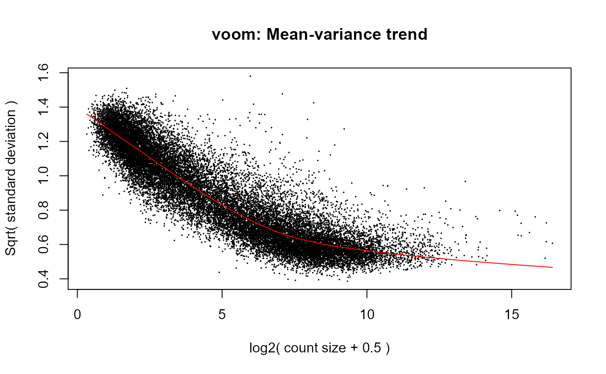
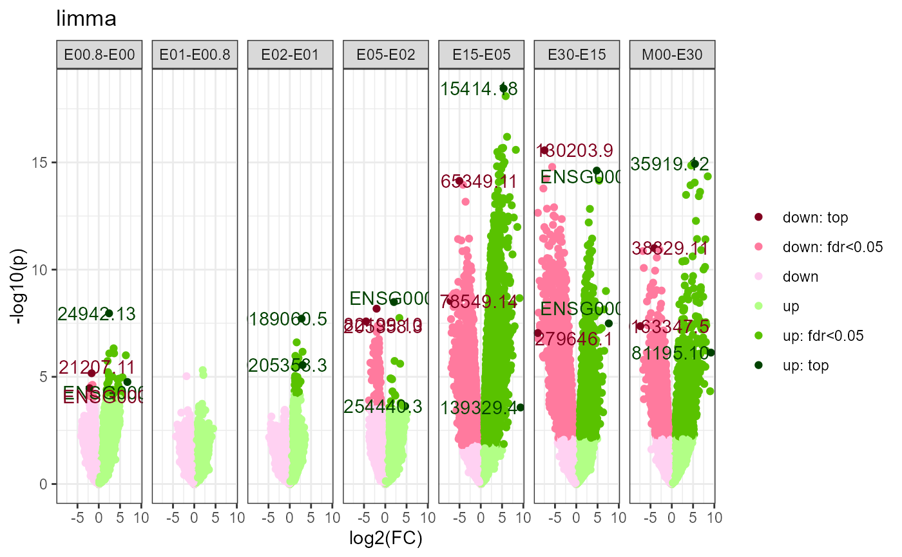

Read/analyze rnaseq counts / bamfiles
.read_rnaseq_bams( dir, paired, genome, nthreads = detectCores(), sfile = NULL, sfileby = NULL, subgroupvar = NULL, ffile = NULL, ffileby = NULL, fnamevar = NULL, verbose = TRUE ) .read_rnaseq_counts( file, fid_col = 1, sfile = NULL, sfileby = NULL, ffile = NULL, ffileby = NULL, subgroupvar = NULL, verbose = TRUE ) read_rnaseq_bams( dir, paired, genome, nthreads = detectCores(), sfile = NULL, sfileby = NULL, subgroupvar = NULL, block = NULL, ffile = NULL, ffileby = NULL, fnamevar = NULL, formula = NULL, min_count = 10, pseudocount = 0.5, genesize = NULL, cpm = TRUE, tmm = cpm, log2 = TRUE, pca = FALSE, fit = NULL, voom = !is.null(fit), contrastdefs = NULL, verbose = TRUE, plot = TRUE ) read_rnaseq_counts( file, fid_col = 1, sfile = NULL, sfileby = NULL, subgroupvar = NULL, block = NULL, ffile = NULL, ffileby = NULL, fnamevar = NULL, formula = NULL, min_count = 10, pseudocount = 0.5, genesize = NULL, cpm = TRUE, tmm = cpm, log2 = TRUE, pca = FALSE, fit = NULL, voom = !is.null(fit), contrastdefs = NULL, verbose = TRUE, plot = TRUE )
Arguments
| dir | read_rnaseq_bams: bam/samfile dir |
|---|---|
| paired | read_rnaseq_bams: whether paired end reads |
| genome | read_rnaseq_bams: mm10"/"hg38"/etc. or GTF file |
| nthreads | read_rnaseq_bams: nthreads used by Rsubread::featureCounts() |
| sfile | sample file |
| sfileby | sample file mergeby column |
| subgroupvar | subgroup svar |
| ffile | feature file |
| ffileby | feature file mergeby column |
| fnamevar | featurename fvar |
| verbose | whether to message |
| file | read_rnaseq_counts: count file |
| fid_col | featureid fvar |
| block | block svar |
| formula | designmat formula |
| min_count | min feature count required in some samples |
| pseudocount | added pseudocount to prevent -Inf log2 values |
| genesize | genesize fvar for tpm |
| cpm | whether to compute cpm |
| tmm | whether to tmm-scale library sizes |
| log2 | whether to log2 transform |
| pca | whether to pca |
| fit | fit model: NULL, 'limma', 'lm', 'lme', 'lmer', 'wilcoxon' |
| voom | whether to compute voom precision weights |
| contrastdefs | contrastdef vector/matrix/list |
| plot | whether to plot |
Value
SummarizedExperiment
Author
Aditya Bhagwat, Shahina Hayat
Examples
file <- download_data('billing19.rnacounts.txt') object <- read_rnaseq_counts(file, pca= TRUE, fit='limma')#>#>#>#>#>#>#>#>#>#>#>#>#> #> #> #> #> #> #> #># requires Rsubread # file <- download_data('billing16.bam.zip') # object <- read_rnaseq_bams(file, paired=TRUE, genome='hg38', pca=TRUE, # fit='limma', plot=TRUE)